一篇文章总结一下Python库中关于时间的常见操作
回复“书籍”即可获赠Python从入门到进阶共10本电子书
今
日
鸡
汤
前言
本次来总结一下关于Python时间的相关操作,有一个有趣的问题。
如果你的业务用不到时间相关的操作,你的业务基本上会一直用不到。
但是如果你的业务一旦用到了时间操作，你就会发现，淦，到处都是时间操作。。。
所以思来想去,还是总结一下吧，本次会采用类型注解方式。
time包
import time时间戳
从1970年1月1日00:00:00标准时区诞生到现在时间一共过了多少秒。
代码
timestamp = time.time() # type:floatprint(timestamp, type(timestamp))
执行结果
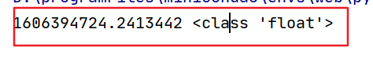
睡眠
有时候可能我们可能需要模仿一些IO请求,假装让程序休眠一下,所以需要用到time的sleep函数。
代码
# 睡眠 1秒time.sleep(1)
本地时区
本地时区需要用到time的localtime方法。
代码
t = time.localtime() # type:time.struct_timeprint(t, type(t))
执行结果

localtime还能接收一个时间戳参数。
代码
# 将时间戳转换成 struct_time 对象t = time.localtime(1606395685.1878598) # type:time.struct_timeprint(t, type(t))
执行结果
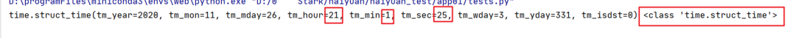
简单的时间格式
代码
t = time.ctime() # type:strprint(t, type(t))
执行结果
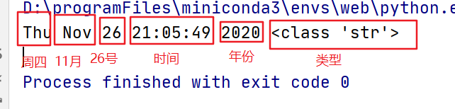
虽然这个能把时间展示出来,但是这个格式实在是不是太好看。
同理,time.ctime()也是可以接收一个时间戳的。
代码
t = time.ctime(1606395685.1878598) # type:strprint(t, type(t))
执行结果
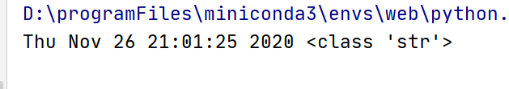
时间格式化
日期格式 -> 字符串(strftime)
代码
t = time.localtime() # type:time.struct_timet_str = time.strftime("%Y-%m-%d", t) # type:strprint(t_str, type(t_str))
执行结果
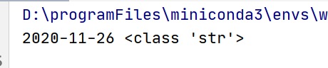
字符串日期 -> 日期(strptime)
代码
t_str = "2020-11-02"t_time = time.strptime(t_str, "%Y-%m-%d") # type:time.struct_timeprint(t_time, type(t_time))
执行结果
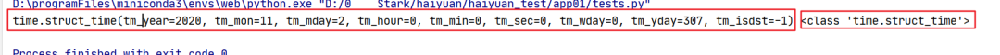
格式化补充
主要有如下格式
| 格式 | 含义 |
|---|---|
| %Y | 完整的年份 |
| %m | 月份（01 - 12） |
| %d | 一个月中的第几天（01 - 31 |
| %H | 一天中的第几个小时（24小时制，00 - 23） |
| %M | 分钟数（00 - 59） |
| %S | 秒（01 - 61） |
具体详见:
https://www.runoob.com/python/python-date-time.htmldatetime包
注:datetime和time是两个不同的类型,不能混用。
from datetime import datetimedatetime.today()
代码
t = datetime.today() # type:datetimeprint(t, type(t))print(t.year) # 年份print(t.month) # 月份
执行结果
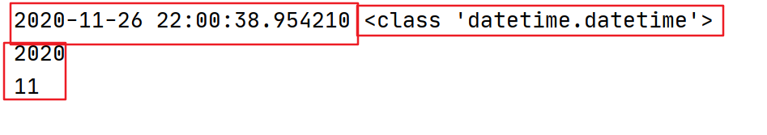
datetime.now()
和datetime.today()基本一样,返回的是本地时间。
代码
t = datetime.now() # type:datetimeprint(t,type(t))
执行结果
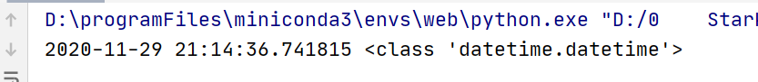
datetime.utcnow()
utcnow返回的是标准(UTC)时间,上述俩返回的都是本地时间,我们是东八区！
代码
t = datetime.now()print("东八区时间:", t)t = datetime.utcnow() # type:datetimeprint("UTC时间:", t)
执行结果
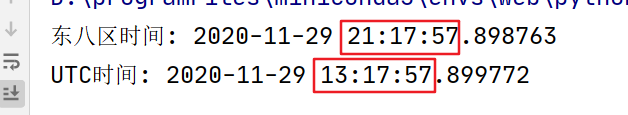
时间戳转datetime
有时候,我们拿到的,就是时间戳,那就只能转了。
代码
# 时间戳timestamp = time.time()print(f"timestamp:{timestamp},type:{type(timestamp)}")# 时间戳转datetimet = datetime.fromtimestamp(timestamp)print(f"t:{t},type:{type(t)}")
执行结果
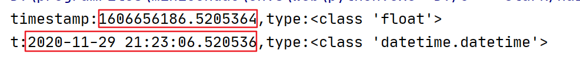
datetime -> 字符串日期(strftime)
代码
from datetime import datetimet = datetime.now()str_datetime = t.strftime("%Y-%m-%d %H:%M:%S")print(f"字符串日期:{str_datetime},type:{type(str_datetime)}")
执行结果
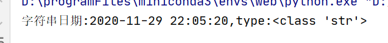
字符串日期 -> datetime(strptime)
代码
from datetime import datetimestr_datetime = "2020-11-29 22:05:20"t = datetime.strptime(str_datetime, "%Y-%m-%d %H:%M:%S")print(f"t:{t},type:{type(t)}")
执行结果
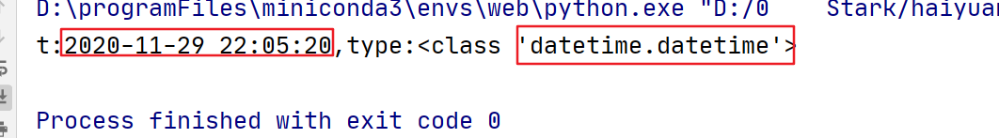
时间加减
这才是本次的重头戏,好像只有datetime这个包,才有时间加减的。
时间加减的具体用途很多,必须多久过期什么的,多久之后提醒,都需要提前计算时间,还是很重要的。
代码
from datetime import datetimeimport datetime as idatetimet = datetime.now()print(f"当前时间:{t}")three_day = t + idatetime.timedelta(days=3)print(f"三天后时间:{three_day}")
执行结果
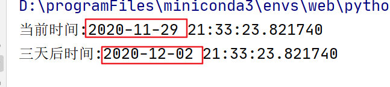
可以发现,这个时间确实是+成功了。
但是自带的时间加减,有个题,只能加天,不能加月,甚至年。
如果想要时间+月等,还要自己写逻辑。
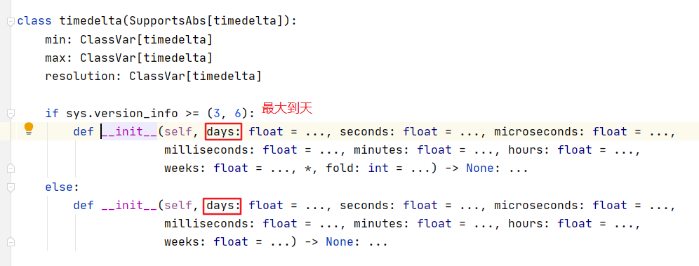
datetime时间自由加减
有个包正好解决了这个问题。
安装
pip install python-dateutil代码
from datetime import datetimefrom dateutil.relativedelta import relativedeltat = datetime.now()print(f"当前时间:{t}")three_time = t + relativedelta(months=3)print(f"三个月后时间:{three_time}")one_year = t+relativedelta(years=1)print(f"一年后时间:{one_year}")up_year = t+relativedelta(years=-1)print(f"去年这个时间:{up_year}")
执行结果
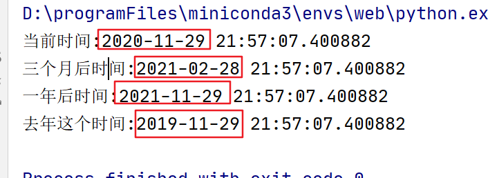
用法很简单,如果想加月/年份,就写正数,如果想减,就写负数,这个方法基本上将python在操作时间上的缺点给弥补了。
总结
本篇主要讲述的是关于Python时间的相关总结,相对来说,更推荐使用datetime。
需要注意的是,time和datetime是俩类型,是不能混用的。
其实最重要的是字符串时间->时间类型,这个在实际中用的非常多！
顺便还有python-dateutil的relativedelta相关方法,能够自由加减时间,算是挺方便的。
如果在操作过程中有任何问题，记得下面留言，我们看到会第一时间解决问题。
越努力,越幸运。如果觉得还不错，记得动手点赞一下哈。感谢你的观看。
最后想学习更多关于Python的知识，可以参考学习网址：http://pdcfighting.com/，点击阅读原文，可以直达噢~
------------------- End -------------------
往期精彩文章推荐：
欢迎大家点赞，留言，转发，转载，感谢大家的相伴与支持
想加入Python学习群请在后台回复【入群】
万水千山总是情，点个【在看】行不行
/今日留言主题/
随便说一两句吧~~
微信扫一扫
关注该公众号